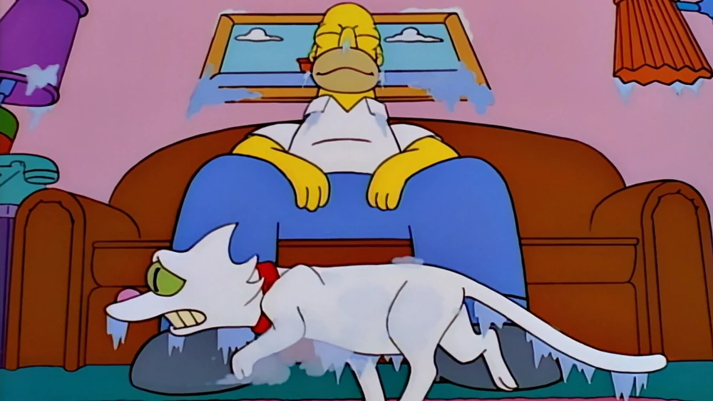

- During a heatwave one summer, Snowball I fanned a block of ice with his tail when the Simpson family couldn't afford an air conditioner. he did not like this, and eventually, the family got an air conditioner, but Homer put the temperature too cold and the cat shook as he walked across the living room.
- Snowball was, according to Lisa in a poem, run over by a Chrysler. Snowball is buried in the Pet Cemetery, which is next to the Springfield Cemetery. However, at one time, his grave was seen in the Simpsons' backyard, next to Snowball II's grave.
- Snowball I is usually portrayed as a green-eyed kitty with white fur, hence her name. The humor of Snowball II's name comes from the fact that unlike Snowball I, she is a black cat. However in one episode Snowball I is depicted as being black too
